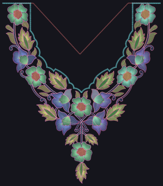
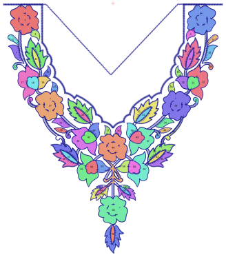
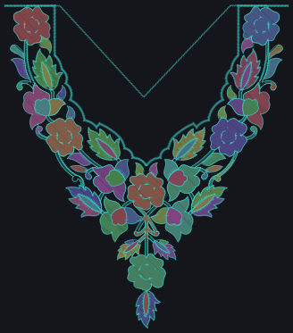

70areas found and filled automatically
851outline paths used
20,246fill stitches generated
318 x 364design size (mm)



| Colour block | Treated as | Stitches | Fill share |
|---|---|---|---|
| 1 | outline | 1355 | 0% |
| 2 | mixed | 911 | 22% |
| 3 | fill | 5959 | 90% |
| 4 | outline | 1532 | 0% |
| 5 | fill | 4530 | 98% |
| 6 | fill | 2595 | 73% |
| 7 | fill | 5260 | 96% |
| 8 | fill | 2062 | 52% |
| 9 | outline | 9557 | 0% |
| 10 | mixed | 1412 | 29% |
| 11 | fill | 8647 | 87% |
| 12 | outline | 2237 | 0% |
| 13 | fill | 7790 | 98% |
| 14 | fill | 4663 | 74% |
| 15 | fill | 5236 | 96% |
| 16 | fill | 2598 | 48% |
| 17 | outline | 14646 | 0% |
| 18 | outline | 4146 | 0% |
Files in this folder: autofilled.dst / autofilled.pes (new stitch file), regions_for_wilcom.svg (filled shapes for import into Wilcom at the same position), regions.csv. Fill stitches are demo quality (no underlay or pull compensation); final stitching is meant to be done by Wilcom from the imported shapes.